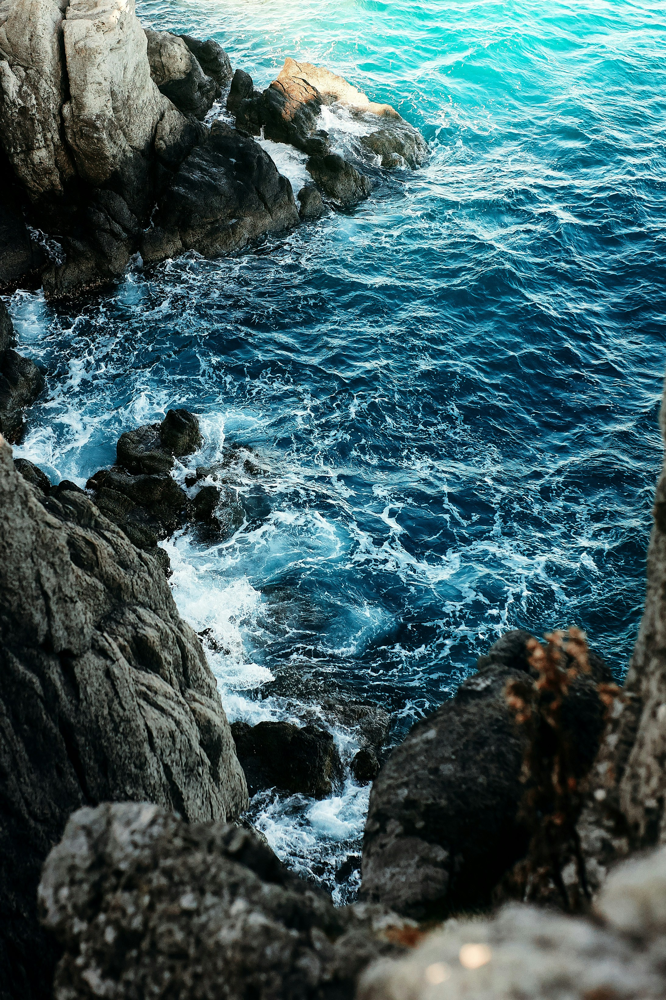
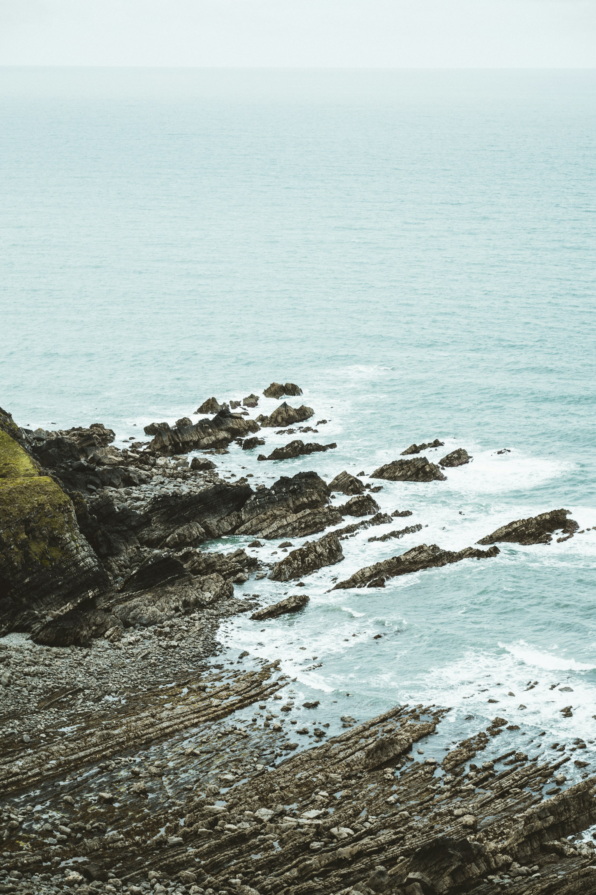

01
Light
Sunlight supports photosynthesis in the upper ocean.
A field guide to the wild
A vast living world extending far beneath the surface.
Discover the wild ↓01 / The environment
The visible horizon is a small part of the story. Beneath it, light fades, pressure rises, and life takes unfamiliar forms.
Currents carry heat and nutrients across great distances. Near the surface, microscopic photosynthetic organisms help sustain marine food webs. Deeper down, life depends on material falling from above or on other sources of energy.
02 / In perspective
The ocean links distant places. Water moves between depths and across basins, carrying the conditions that shape life.

03 / A connected system
01
Sunlight supports photosynthesis in the upper ocean.
02
Conditions change profoundly below the sunlit surface.
03
Currents connect habitats through heat, nutrients, and life.
04 / Field study
Tides repeatedly submerge and expose a rocky shore. Water remains in hollows while other surfaces face air, sun, and wind.
Intertidal organisms must cope with changing moisture, temperature, and wave exposure.

05 / Look closer
No. Most familiar surface waves are generated by wind transferring energy to water. Tides are longer changes in sea level driven mainly by the gravitational influence of the Moon and Sun. Both affect a coast, but they operate in different ways.
Different heights on a shore experience different lengths of exposure to air and water. Organisms vary in their tolerance for drying, temperature change, and wave action. These differences help shape where they can live within the intertidal zone.
Moving water carries nutrients, sediments, and organisms. Tides and currents move these materials between coastal habitats and wider waters.
Further reading:NOAA / The intertidal zone ↗
Continue exploring / 02
About ↗